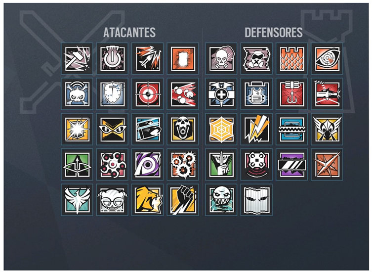

OPERADORES

Rainbow Six Siege possui muitos operadores decorrente que todos os o anos são lançados 8 agentes para todos os jogadores. O jogo tem por volta de 34 agentes sendo que na data de lançamento do jogo só possuiam 20. Os desenvolvedores do jogo pensam em chegar na meta de 100 agentes ao todo danto muito tempo de vida ao jogo.